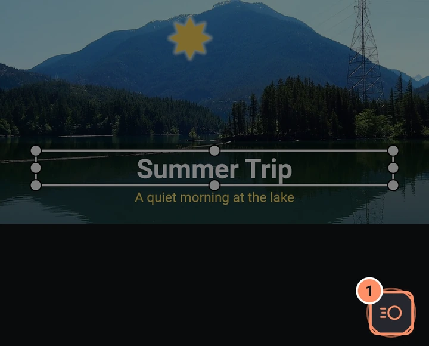
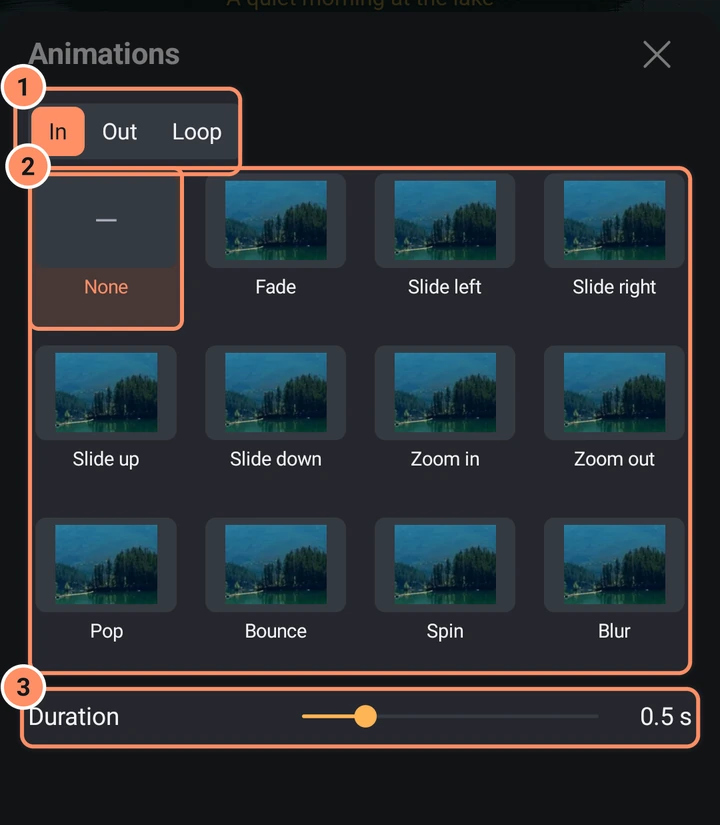
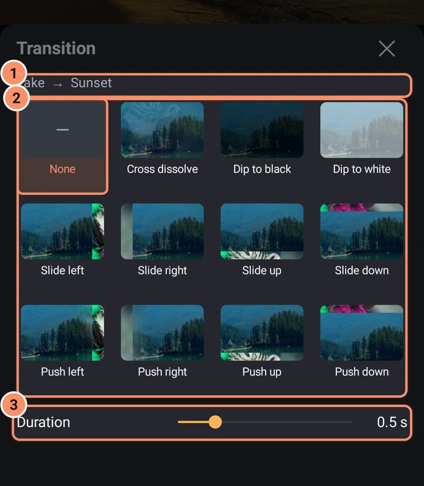

轉場與動畫
片段之間的一鍵轉場，以及任何圖層的進場、出場和循環動畫。
兩者都會寫入一般的關鍵影格和特效，之後仍可編輯，因此可作為起點使用。
進場、出場和循環動畫
- 選取一個視覺圖層（不能是音效、攝影機或空物件）。
- 點一下預覽右下角的圓形製作動畫按鈕。動畫面板會開啟。
- 在頂部選擇進場、出場或循環，然後點選一個格子。無位於格狀清單的第一個。
- 設定時長。


| 動畫 | 時長 | |
|---|---|---|
| 進場和出場 | 淡入、左滑、右滑、上滑、下滑、放大、縮小、彈出、彈跳、旋轉、模糊 | 0.1 至 2 秒（預設 0.5） |
| 循環 | 脈動、搖晃、漂浮、旋轉 | 0.2 至 4 秒（預設 1） |
進場動畫會放在片段開頭，出場動畫放在片段結尾，循環動畫則會在整個片段中播放。若該端已有轉場，選擇動畫會取代它，面板也會明確說明。
兩個片段之間的轉場
轉場會讓一個片段與下一個片段融合。需要兩個視覺片段，且第二個片段的開始與結束時間都要比第一個晚。
- 將兩個片段排列成相接或重疊。在未選取任何內容時，當播放頭位於切點時，時間軸區域右下角、+ 按鈕正上方會出現圓形的轉場按鈕。或者，選取兩個片段，然後點一下底部列中的在兩個片段之間新增轉場。
- 轉場面板會顯示「片段 A 到片段 B」，以及轉場格狀清單，第一個為無。
- 選擇一種轉場，並設定時長（0.1 至 2 秒，預設 0.5）。


可用的轉場：交叉溶解、漸隱至黑、漸隱至白、左滑、右滑、上滑、下滑、左推、右推、上推、下推、右擦除、左擦除、上擦除、下擦除、時鐘擦除、放大、縮小、旋轉、模糊、發光、漩渦、甩動平移、故障、閃光、震動、像素化和雜訊溶解。推移、放大、縮小和旋轉都帶有動態模糊。格狀清單可以捲動：向上滑動即可看到最後幾個。

若片段重疊不足，應用程式會移動或縮短片段並通知你，例如「已將 ... 提前，讓片段重疊。」以及「已縮短為 0.5 秒以符合片段。」音效、攝影機和空物件圖層不能加上轉場。
若要讓轉場按鈕移開，請將它向左或向右滑向螢幕邊緣；移動播放頭時它會再次出現。設定 > 編輯器 > 預覽中的轉場按鈕可將它移到預覽的左下角。
自訂
特效、移動特效或一組關鍵影格可以完成相同的工作，並提供更精細的控制。將你喜歡的外觀儲存為預設集，即可重複使用：請參閱 素材、範本與預設集。